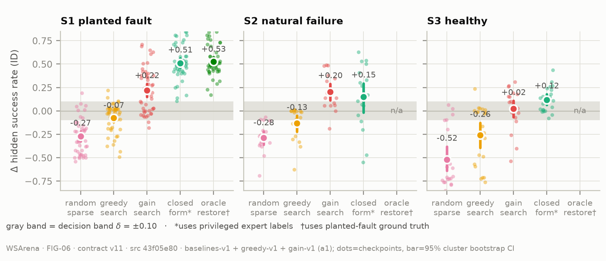
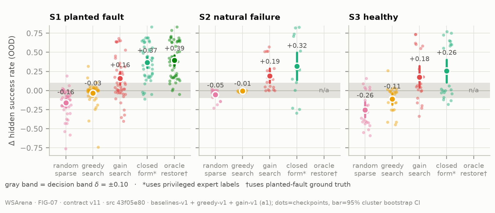
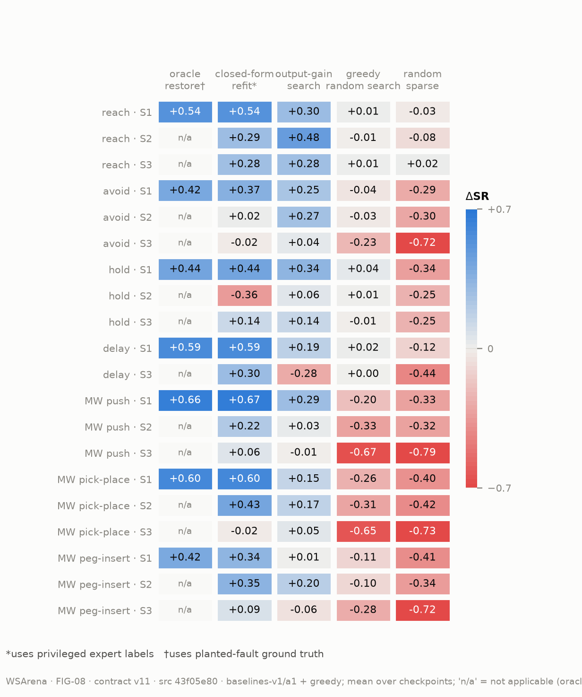
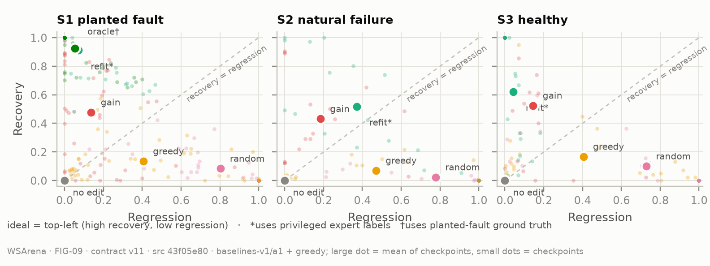
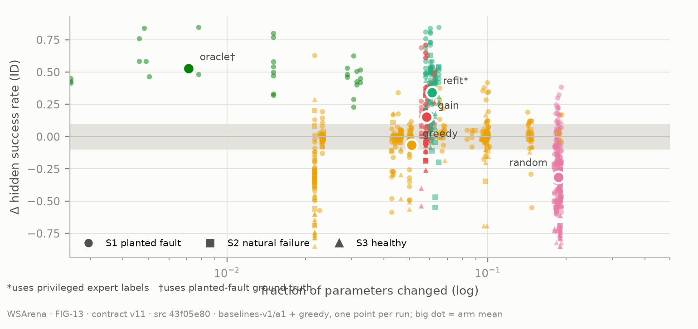
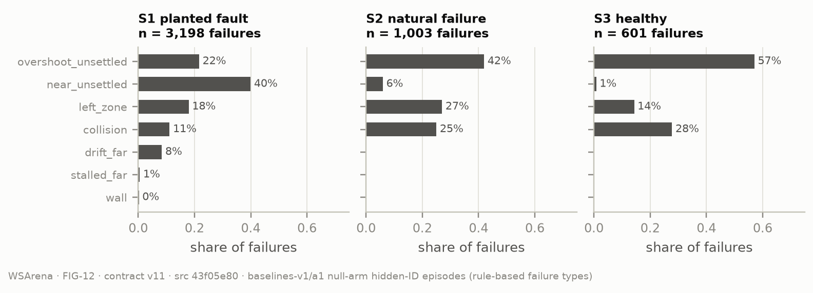
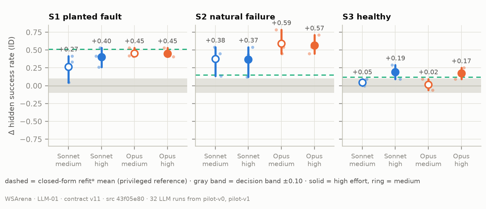
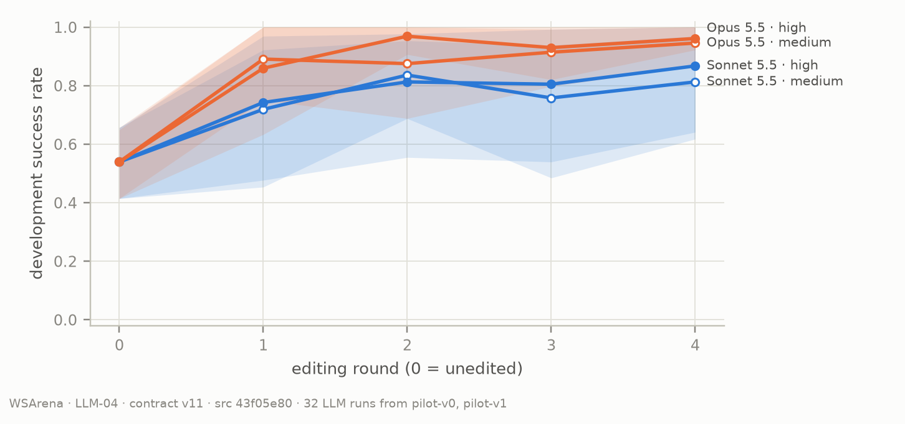

Results
LLM results: Pilot only. 16 Claude runs (2 tasks × 2 checkpoints, one run per cell) establish cost, feasibility and failure modes; they carry no inferential power and are not main-study data (see pilot report). The figures in the first block are the scripted control arms — the reference every LLM arm must be read against.






Reading the controls
- On planted faults the privileged closed-form refit is almost as good as the oracle: an LLM must be judged against it.
- On natural failures the closed-form refit is unstable — this is where an LLM can differ.
- Greedy random search with the same feedback budget does nothing; random sparse edits are harmful.
LLM arms (templates ready)

